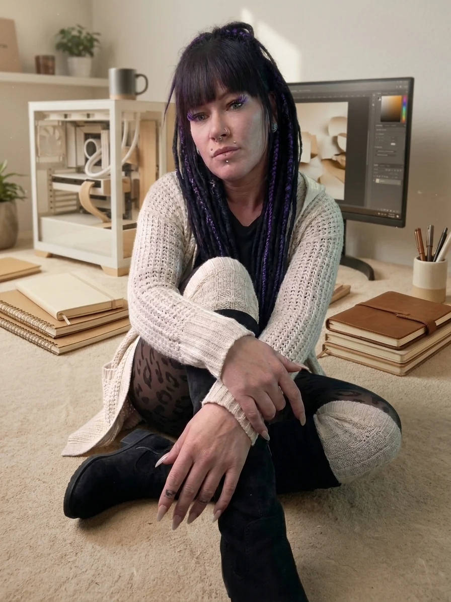

01 · Präsentation · 5 Folien
Vorher: Fünf Folien. Viel Innenleben.
So fing es an: fünf Folien darüber, wofür Innenleben da ist und warum du hier nichts leisten musst. Der erste Gedankensortierer mit Seitenzahl.
PowerPoint herunterladen ↓Innenleben ist nicht einfach irgendwann fertig vom Himmel gefallen. Hier wird ausprobiert, verworfen, geflucht, Kaffee getrunken und wieder von vorne angefangen.
In diesem kleinen Baukasten zeige ich dir, was hinter den Kulissen entsteht. Manches ist schon fertig, anderes noch mitten im kreativen Chaos. Und genau so darf es sein.
Gerade wächst Innenleben auch mit meiner KI-Masterclass. Was ich dort lerne, landet hier zwischen ersten Versuchen und „Ach, so geht das!“. Deswegen herrscht hier gelegentlich das absolute Chaos. Der Kaffee ist kalt, die Ideen sind wach. Und genau so darf es sein.
Zurück zu Frau H.
Hier kannst du anschauen, anhören und reinlesen, was während der Schulung entstanden ist. Alles mit KI-Unterstützung und einer ordentlichen Portion Innenleben.
So fing es an: fünf Folien darüber, wofür Innenleben da ist und warum du hier nichts leisten musst. Der erste Gedankensortierer mit Seitenzahl.
PowerPoint herunterladen ↓Aus der ersten Präsentation ist eine neue Videoversion geworden: ein stiller Ort zwischen Zusammenbruch und Kaffee, mit Einblicken ins Workbook und kleinen Momenten zum Durchatmen.
Vorher Gedanken mit Seitenzahl. Jetzt Gedanken mit Ton. Der Baukasten hat offenbar den Sprechknopf gefunden.
Zwischen gemütlicher Leseecke und einer ganz anderen Kulisse. Zwei Seiten, die irgendwie beide dazugehören. Innere Ruhe hatte heute offenbar einen anderen Termin.
Ein Workbook klappt auf, der Kaffee dampft, und für einen Moment muss gar nichts. Wenn schon Werbung, dann wenigstens mit einer Pause.
„Das Leben ist chaotisch. Der Kaffee wird kalt. Und irgendwo dazwischen bist du … mit deinem Innenleben.“ Die kurze Hörversion vom ganz normalen Dazwischen.
„Kann ein Workbook Therapie ersetzen?“ Zu dieser Frage ist in der Schulung ein längerer Audiobeitrag entstanden. Für diesen Teil des Baukastens darf der Kaffee ruhig nachgefüllt werden.
Fortsetzung folgt. Vermutlich nach dem nächsten Kaffee.